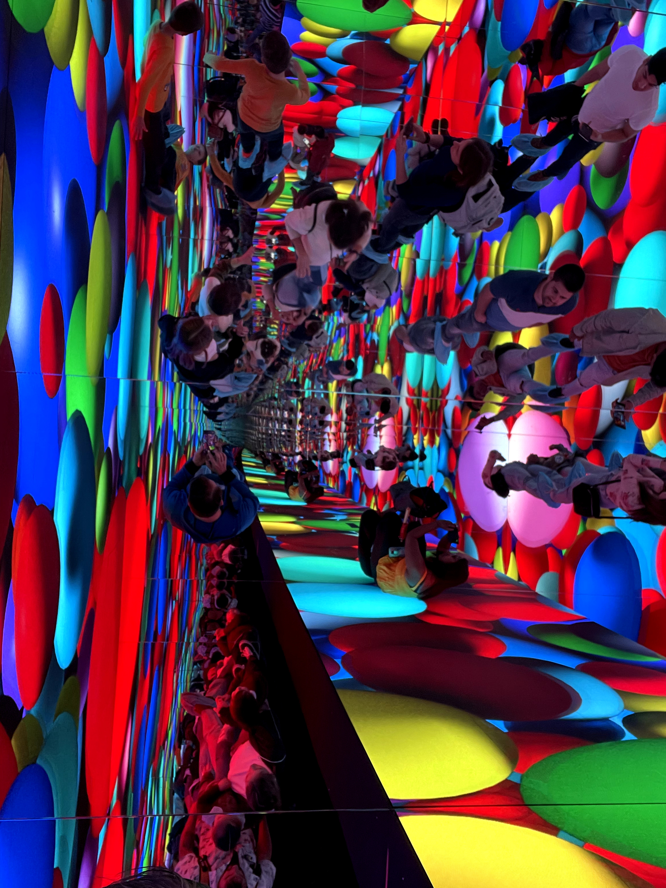

Cada mes te vamos a destacar las principales actividades a disfrutar en Villarriba. Son los IMPERDIBLES del mes. Este mes te traemos cuatro actividades para toda la familia LA PISCINA DE BOLAS MÁS GRANDE DEL MUNDO Piscina de bolas | fuente: GGB SIÉNTETE DOCTOR STRANGE EN UN MULTIVERSO DE ESPEJOS  Multiverso de Espejos | fuente: GGB DISFRUTA DE UNA PUESTA DE SOL MULTIDIMENSIONAL Puesta de sol multidimensional | fuente: GGB BAILA AROUND THE CLOCK EN NUESTRA DISCOTECA DE VERANO Discoteca de verano | fuente: GGB